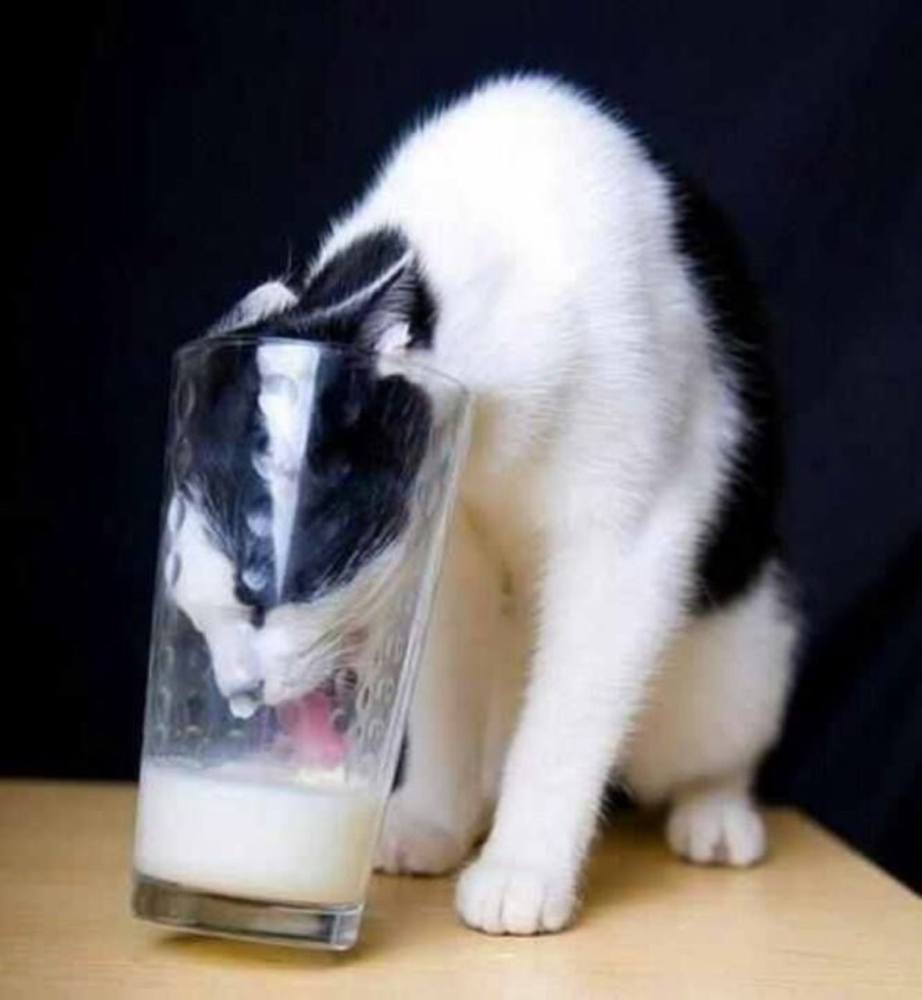

Pisicuța mea
Pisicuța mea tărcată
Are-un obicei aparte
Pleacă-n mahalaua toată
Fie zi sau fie noapte
Nu umblă pe-acoperișuri
După eu știu ce motan
Umblă după furtișaguri
De-ale gurii și nu bani
Unde sunt oale la prins
Pe toate le smântânește
Tot timpul e cu botul uns
Câteodată mai greșește
Și cum lacomă se-avântă
După o bogată hrană
Oala find cu gât și-adâncă
Cade cu capu-n capcană
Vine acasă cu oala-n cap
Mieunând ca o sirenă
Fac de toate și o scap
Și pun oala-n cui de-atârnă
Să și-o ia orice vecina.
PS "Povestea nu este de-a spune ce-ai de spus,
Ci despre cum o spui"
Robert McKee
Vasile Groza
Apare și în: Poezii cu animale.